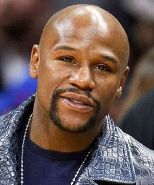
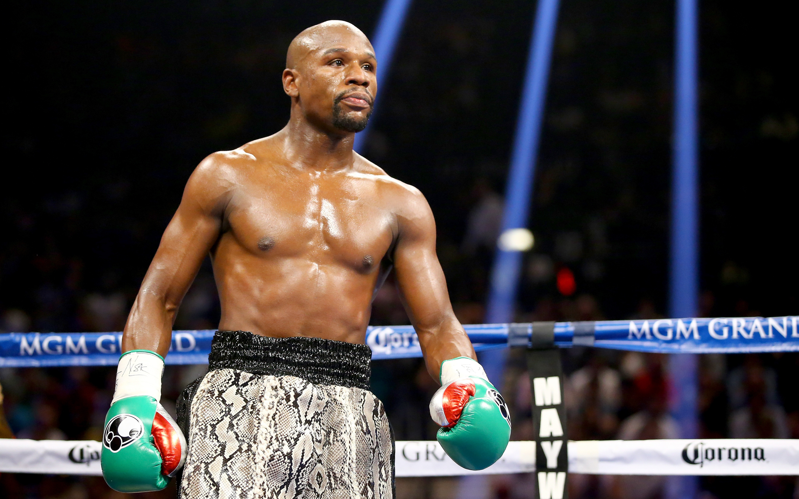

Флойд Мейвезер
Флойд Мейвезер – американский боксер.
Флойд Мейвезер родился 24 февраля 1977 в городе Гранд-Рапидс, штат Мичиган, США.
Занимался боксом с раннего детства. Бросил школу ради своих занятий.
Дебютировал в мировом боксе на Олимпийских играх 1996-го года в Атланте, где заработал бронзовую медаль.
Личная жизнь Мейвезера
Мейвезер ни разу не был официально женат. При этом он воспитывает четверых детей от двух разных девушек.
Дольше всего – больше десяти лет – он прожил с Джоси Харис, родившей Мейвезеру двоих сыновей и дочь.
Бои Мейвезера
Бой против Эрнандеса. В 1998-м году в бою против Дженаро Эрнандеса выиграл титул чемпиона по версии WBC. Следует отметить, что это был всего-лишь восемнадцатый бой в профессиональной карьере Мейвезера.
Бой против Пакьяо. Состоялся в мае 2015-го года и был назван боем века, закончился победой Мейвезера. Кроме того, принято считать бой Мейвезера и Пакьяо наиболее прибыльным в истории.
Бой против Макгрегора. Самый знаменитый в карьере Мейвезера бой прошел в Лас-Вегасе в 2017-м году. Мейвезер одолел Макгрегора только в десятом раунде, одержав победу техническим нокаутом.
Флойд Мейвезер против Хабиба Нурмагомедова
Бой между Флойдом Мейвезером и Хабибом Нурмагомедовым должен состояться весной 2020-го года. Шоу пройдет в России. При этом, поединок должен будет пройти по правилам бокса. Следует отметить, что и Мейвезер, и Нурмагомедов оба являются непобежденными бойцами, которые не потерпели ни одного поражения. Букмекеры уже принимают ставки на бой Мейвезера и Нурмагомедова и по коэффициентам однозначным фаворитом является Мейвезер.
Титулы Мейвезера
В общей сложности Флойд Мейвезер провел 50 профессиональных и 90 любительских боксерских поединков. В случае с профессиональными, он не проиграл ни одного боя. И только шесть поединков в любительской карьере Мейвезера закончились поражением.
В результате этого Мейвезер носит титул абсолютного чемпиона мира по боксу, по версиям: WBA, WBC, IBF и WBC.
Флойд Мейвезер в сети
Фейсбук. На страницу Мейвезера в Facebook подписано 13,5 миллионов человек.
Твиттер. У его аккаунта в Twitter почти восемь миллионов читателей.
Инстаграм. Самую большую популярность приобрела его страница в Instagram, где Мейвезер публикует свои фотографии. В 2019 году количество подписчиков перевалило за 23 миллиона.
 